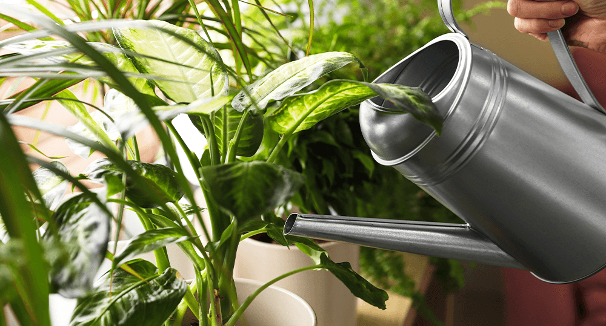

Kako zalijevati kućne biljke kada ste odsutni

Ako ste uzbuđeni što idete na odmor, ali ste pomalo zabrinuti kako će vaše biljke preživeti vaše odsustvo, ne brinite. Svoje kućne biljke možete podesiti za uspešan odmor uz samo malo planiranja. Za najbolje rezultate, predlažemo da započnete pripremni proces nekoliko dana pre nego što krenete - ne ostavljajte to za poslednji trenutak!
Planirajte Spa dan za biljke
Ako su vaše biljke dobro zalivene, čiste i uspevaju pre nego što odete, mnogo je veća verovatnoća da će se same snaći 10-12 dana. Zato izaberite dan, 2-3 dana pre polaska, da provedete neko vreme pripremajući svoje biljke za odmor. Evo šta treba da uradite nekoliko dana pre nego što krenete:
- Temeljno zalijte sve svoje biljke dubokim namakanjem. Kada se voda dobro upije u svu zemlju, ostavite ih da odstoje i malo se ocede.
- Očistite sve mrtve ili smeđe listove i proverite da li ima znakova štetočina. Ako biljke imaju štetočine, tretirajte ih i stavite u karantin dalje od ostatka biljaka pre nego što krenete na put.
- Biljke koje su skupljene zajedno stvaraju sopstvenu malu mikroklimu, koja zadržava vlažnost. Dakle, skupite svoje biljke u grupe. Ako imate svetlo kupatilo, napunite kadu ili tuš svojim biljkama. U idealnom slučaju, trebalo bi da budu grupisane dalje od prozora, da, čak i onih koji vole direktno sunce, i dalje od promaje kao što su vrata ili otvori za cirkulaciju vazduha. Što su manje direktnog sunca, sporije će trošiti vodu.
- Povećajte vlažnost. To možete da uradite sa tacnama sa šljunkom ili, ako imate visoke biljke, pokušajte da stavite neke visoke otvorene posude napunite ih sa vodom i stavite ih među biljke kako biste pomogli sa vlagom.
- Podesite temperaturu u svom domu na umereniju temperaturu. Oni će trošiti vodu sporije ako ne doživljavaju ekstremne temperaturne fluktuacije. Temperature između 13C i 18C će blago usporiti proces transpiracije.
Zalivanje kućnih biljaka dok vas nema
Za većinu sobnih biljaka, dobro zalivanje, veća vlažnost i grupisanje pre vašeg odmora biće dovoljni da prežive desetak dana vašeg odsustva. Međutim, ako odlazite duže od 10-12 dana ili imate kućne biljke kojima je potrebno stalno vlažno tlo, moraćete da postavite neku vrstu sistema za navodnjavanje. (To jest, osim ako ne možete podmititi prijatelja ili komšiju da ih zalije za vas!)
Postoji nekoliko odličnih sistema za navodnjavanje kap po kap koje možete kupiti za kućne biljke, ali ne morate da tražite nešto previše otmeno. Takođe možete pronaći mnoštvo tutorijala „uradi sam“ na internetu za izgradnju sopstvenih sistema za navodnjavanje kap po kap. Međutim, to je takođe prilično značajan projekat koji treba da dodate na vašu listu obaveza pre putovanja!
Umesto toga, predlažemo da se odlučite za jedan od manje složenih sistema za zalivanje biljaka koje vole vlagu dok vas nema:
- Napravite kapilarni sistem zalivanja. Sastoji se od dugačkog komada teškog pamučnog gajtana, tkanine ili trake i kante vode. Prvo gurnite gajtan u zemlju vaše saksije, prilično duboko, tako da dođe do korena. Zatim umotajte drugi kraj u posudu sa vodom. Tkanina odvodi vodu iz kante i dole do korena vaše biljke.
- Koristite kugle za zalivanje ili šiljke za zalivanje.Osim ako nemate prilično velike kugle za zalivanje, neće vam kupiti tonu dodatnog vremena. Ali šiljci za zalivanje mogu dosta pomoći jer na sebi drže velike boce, poput 2-litarske soda boce. Takođe možete napraviti „uradi sam“ šiljke za zalivanje tako što ćete probušiti nekoliko sićušnih rupa u poklopcu soda boce, napuniti ga vodom, a zatim zakopati vrat u zemlju biljke tako da voda polako curi.
- Probajte saksije sa samozalivanjemPosude za samonavodnjavanje su dizajnirane slično kapilarnom sistemu, ali tkanina koja propušta vodu i rezervoar za vodu nalaze se unutar saksije. Takođe su odlični za biljke na teško dostupnim mestima.
Samo zato što ste stekli veliku džunglu kućnih biljaka ne znači da morate žrtvovati njihovo blagostanje za zasluženi odmor! Naprotiv, ako se pridržavate ovih saveta, vašim biljkama teško da ćete nedostajati dok ste odsutni.